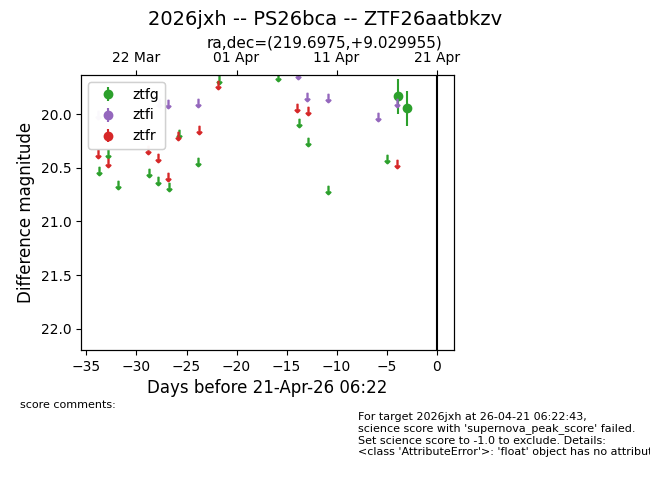
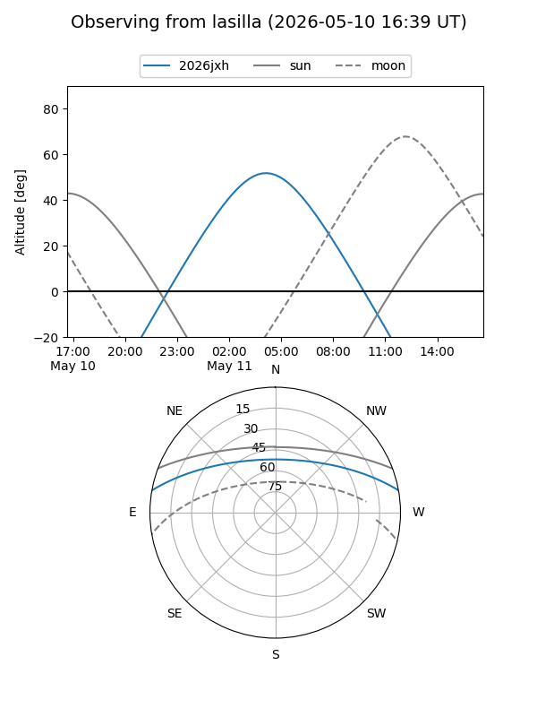
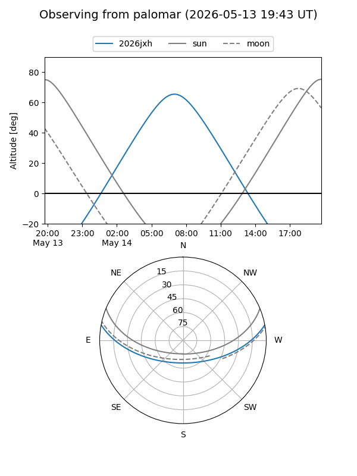
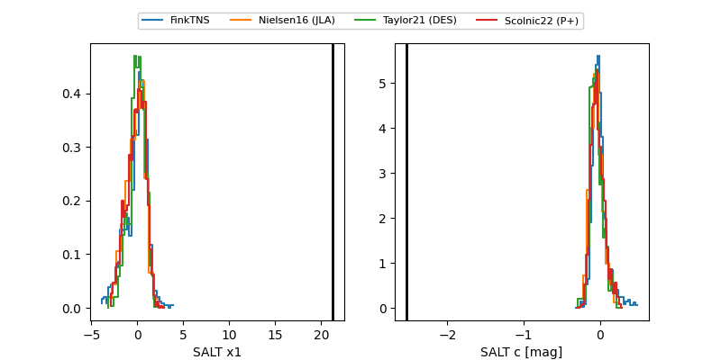

2026jxh
Target 2026jxh at 2026-04-21 06:26
Aliases and brokers:
FINK: link
Lasair: link
ALeRCE: link
TNS: link
YSE: link
alt names
ZTF26aatbkzv (ztf,fink_ztf)
2026jxh (tns,yse)
PS26bca (panstarrs)
Coordinates:
equatorial (ra, dec) = 219.6975,+9.02996
equatorial (HMS+DMS) = 14:38:47.40,+09:01:47.84
galactic (l, b) = (2.4796,+58.85367)
Flags:
Photometry:
last ztfg=19.95
2 ztfg detections
Lightcurve

Visibility


Additional plots
